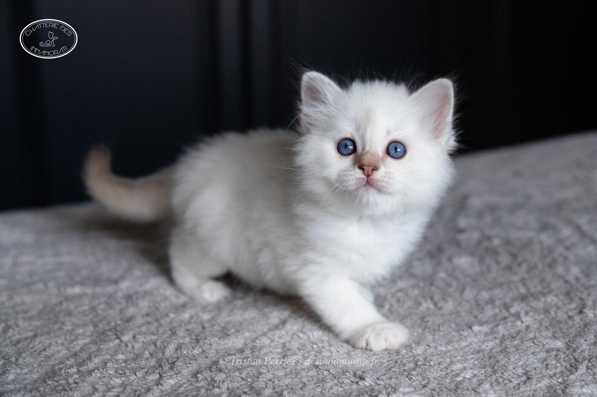

RobeFemelle · Chocolat silver tabby point
ParentsCrowned Dream Kacey × Origan de Shweli-Sittang
StatutAdoptée
Album4 photos, de août 2019 à juillet 2020
Frères et sœursParadise Rainbow Silver des Innamorati, Paradise Silver Moon des Innamorati, Passionata Black Pearl des Innamorati
Demi-frères et sœurspar sa mère : 2021 avec Oedipe, 2022 avec Oedipe, 2023 avec Bacckara's Bellamy
par son père : 2020 avec Poker Face
par son père : 2020 avec Poker Face


Photos réduites et marquées. Elles appartiennent à la Chatterie des Innamorati et ne peuvent pas être reprises dans une annonce.